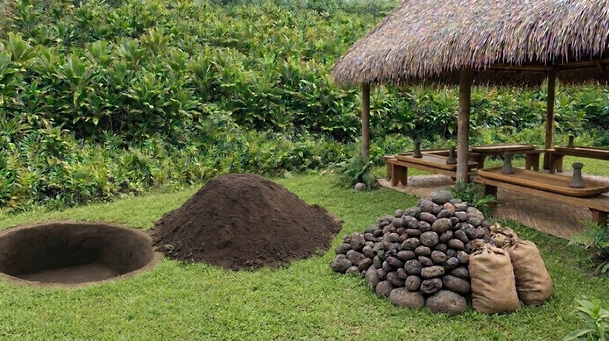

Native Hawaiian Community Center
The Hui is pursuing a long-term land partnership for conservation-easement lands to develop a Native Hawaiian cultural and educational community center. Planning is oriented toward conservation-compatible, low-impact community use and remains subject to the required land, agency, environmental, and organizational approvals.
The center is intended to support nearby elementary, intermediate, and high school students and three surrounding Department of Hawaiian Home Lands homestead communities through cultural learning, environmental stewardship, regenerative practices, food systems, and intergenerational education.
Stream & riparian stewardship
Kahawai o ka Poʻo Poʻo and its riparian corridor are also part of the Hui’s long-term place-based stewardship vision. The stream is now generally dry except during heavier rains, while the bordering hillside has experienced serious erosion, loss of residential land, and conditions that raise safety concerns.
The Hui seeks to support responsible riparian restoration and watershed stewardship, including appropriate technical assessment of erosion, slope stability, hydrology, vegetation, and other ecological conditions. Any physical restoration or stabilization work would proceed only with the necessary landowner, agency, environmental, engineering, and other professional review and approvals.